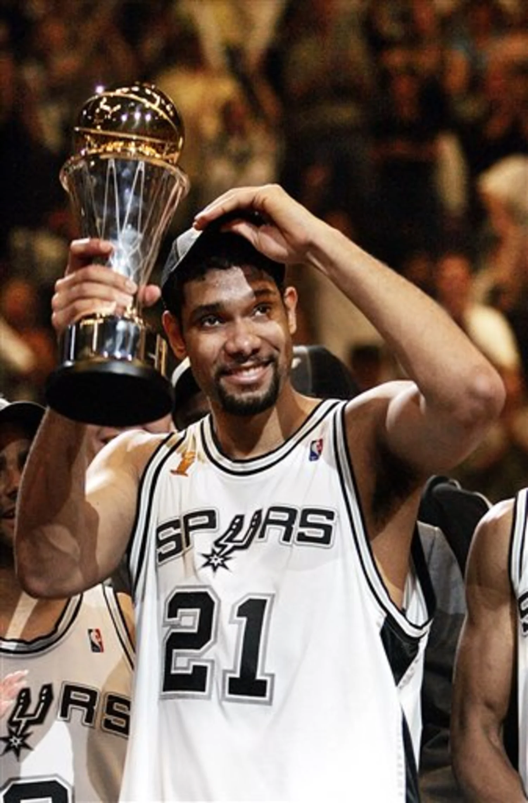

San Antonio Spurs — АҚШ-тың Техас штатындағы Сан-Антонио қаласында орналасқан кәсіби баскетбол командасы. Олар NBA-ның Батыс конференциясының Оңтүстік-Батыс дивизионында ойнайды және лига тарихындағы ең тұрақты, ең табысты клубтардың бірі болып саналады. Команда 1967 жылы құрылған, алғашында ABA лигасында ойнап, 1976 жылы NBA-ға қосылған. Spurs өз ойындарын Frost Bank Center аренасында өткізеді.
Spurs-тің «алтын дәуірі» бас бапкер Грегг Попович басқарған кезеңмен тығыз байланысты. Оның жүйесі — тәртіп, пасқа негізделген командалық ойын және жас таланттарды дамыту. 1999–2014 жылдар аралығында Spurs 5 рет NBA чемпионы атанды. Олар әр маусым сайын тұрақты түрде плей-оффқа шығып, лигадағы ең ұйымшыл және ең дұрыс басқарылатын клуб ретінде танылды.
Бұл жетістіктерге «Spurs династиясы» атанған жұлдыздар триосы себеп болды: Тим Данкан, Тони Паркер және Ману Жинобили. Үшеуі ұзақ жылдар бойы бір-бірін толықтырып, командаға тұрақтылық пен үздік нәтиже әкелді. Қазіргі уақытта Spurs болашақ супержұлдыз Виктор Венбаньяма төңірегінде жаңа команданы қалыптастырып, қайта өрлеу кезеңіне кірді.

Тим Данкан — San Antonio Spurs тарихындағы ең үздік ойыншы және клубтың басты символы. «The Big Fundamental» лақап атымен белгілі Данкан қарапайым, бірақ өте тиімді стилімен танылды. Ол Spurs-ті 5 чемпиондыққа алып келді, 2 рет финал MVP атанды және NBA тарихындағы ең тұрақты әрі жан-жақты форвардтардың бірі ретінде бағаланады. Данктың №21 жейдесі клубтан мәңгілікке retirada етілген.